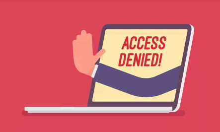

3. To which extent and how does the internet have political consequences? From module 1.3
Et demokrati er avhengig av åpent internett for å kunne ytre om sine kjernesaker og for å nå ut til sine følgere. Samtidig kan et åpent internett forårsake forum med desinformasjon, krenkende, hatefulle og truende ytringer. Influensere og kjendiser bruker også sosiale medier til å dele sine egne politiske meninger, som kan påvirke deres fans og følgere. Ser vi tilbake til USAs presidentvalg i 2016 var det stor aktivitet over hele verden, og blant mange profilerte influensere og kjendiser. Dette førte til mye desinformasjon og latterliggjøring av kandidater. Det er vist i etterkant av valget at russisk sabotasje påvirket spesielt valgkampanjen til Hillary Clinton samtidig som dette økte fordelene til Donald Trump, som vant valget og ble mildt sagt en president man sent kan glemme.[1]
Den pågående krigen mellom Russland og Ukraina er også et eksempel på hvordan skjermet internettbruk kan gi misvisende oppfatninger for befolkning. Russland bruker bla.a. sterk nettsensur for å desinformere folket om krigen de har startet, og som fremdeles pågår.[2] Dette fører til at krigen får mer støtte av folket enn den antagelig ellers hadde fått.
Kina er også et eksempel på et land hvor man kan se innvirkningen på nettsensur i stor grad. Det kinesiske kommunistpartiet (CCP) bruker sensur for å hindre politisk opposisjon og øke sitt eget politiske bilde.[3] Sensur fører til at folket får et perspektiv de ellers kanskje ikke hadde endt opp med, og derfor kan utfallet i mindre eller større grad bli endret. Samtidig vil sensur også sensurere folket selv, slik at deres meninger ikke blir uttrykt, og bare partiets egne meninger blir fremvist og tilgjengelig. Dette vil gjerne produsere valg resultater som er nærmere det partiet er ute etter, og det gjennom “lovlige” metoder (ikke valgfusk eller lignende).
what-is-internet-censorship.jpg [Bilde]. 2019. Hentet fra: https://www.g2.com/articles/internet-censorship
[1] Abrams, A. (2019, 18.april). Here's What We Know So Far About Russia's 2016 Meddling. TIME.
https://time.com/5565991/russia-influence-2016-election/
[2] Joshua Yaffa. (2022, 29. Mars). Why Do So Many Russians Say They Support the War in Ukraine?. The New Yorker. https://www.newyorker.com/news/news-desk/why-do-so-many-russians-say-they-support-the-war-in-ukraine
[3] American Political Science Review, Volume 107, Issue 2, May 2013, pp. 326 - 343 DOI: https://doi.org/10.1017/S0003055413000014
2833289.jpg [Artikkel bakgrunns bilde]. u.å. Hentet fra: https://wallpaperaccess.com/full/2833289.jpg